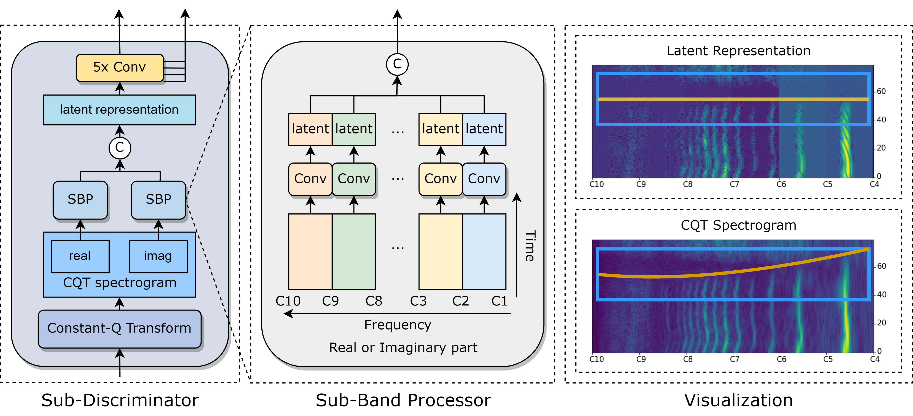

An Investigation of Time-Frequency Representation Discriminators for High-Fidelity Vocoder
Yicheng Gu, Xueyao Zhang, Liumeng Xue, Haizhou Li, Zhizheng Wu
School of Data Science, The Chinese University of Hong Kong, Shenzhen
Abstract
Generative Adversarial Network (GAN) based vocoders are superior in both inference speed and synthesis quality when reconstructing an audible waveform from an acoustic representation. This study focuses on improving the discriminator for GAN-based vocoders. Most existing Time-Frequency Representation (TFR)-based discriminators are rooted in Short-Time Fourier Transform (STFT), which owns a constant Time-Frequency (TF) resolution, linearly scaled center frequencies, and a fixed decomposition basis, making it incompatible with signals like singing voices that require dynamic attention for different frequency bands and different time intervals. Motivated by that, we propose a Multi-Scale Sub-Band Constant-Q Transform CQT (MS-SB-CQT) discriminator and a Multi-Scale Temporal-Compressed Continuous Wavelet Transform CWT (MS-TC-CWT) discriminator. Both CQT and CWT have a dynamic TF resolution for different frequency bands. In contrast, CQT has a better modeling ability in pitch information, and CWT has a better modeling ability in short-time transients. Experiments conducted on both speech and singing voices confirm the effectiveness of our proposed discriminators. Moreover, the STFT, CQT, and CWT-based discriminators can be used jointly for better performance. The proposed discriminators can boost the synthesis quality of various state-of-the-art GAN-based vocoders, including HiFi-GAN, BigVGAN, and APNet.
Approach
MS-SB-CQT Discriminator
As illustrated below, the MS-SB-CQT Discriminator consists of identically structured sub-discriminators operating on CQT spectrograms with different time-frequency resolution distributions. In each sub-discriminator, the real and imaginary parts of the CQT spectrogram will be sent individually to our proposed Sub-Band Processing (SBP) module to get their latent representations. These two representations will then be concatenated and sent to convolutional layers to get the outputs for computing loss.

Architecture of the Sub-Discriminator in MS-SB-CQT Discriminator. Operator ''C'' denotes for concatenation.
SBP means our proposed Sub-Band Processor module. It can be observed that the desynchronized CQT Spectrogram
(bottom-right) has been synchronized (upper-right) after SBP.
MS-MW-CWT Discriminator
As illustrated below, the MS-MW-CWT Discriminator consists of identically structured sub-discriminators operating on CWT spectrograms with different wavelets and different amounts of wavelet scales. In each sub-discriminator, the CWT spectrogram will be sent to a series of Conv2d layers that only operate on the time dimension to obtain its time-domain compressed representation. The processed representation will then be sent to convolutional layers to get the outputs for computing loss.
Architecture of the Sub-Discriminator in MS-TC-CWT Discriminator. Operator ''C'' denotes for concatenation.
TC means our proposed Temporal Compressor module. Comp is a series of temporal-overlapped convolution
layers. K is the total number of frequency bins. It can be observed that the CWT Spectrogram
(bottom-right) can be compressed while maintaining the overall energy distribution over different frequency
bins (upper-right).
Effectiveness of the Proposed Discriminators and Using Them Jointly
Analysis-synthesis results of different discriminators when being integrated into HiFi-GAN. The best and the
second best results of every column (except those from
Ground Truth) in each domain (speech and singing voice) are bold and italic.
"S", "C" and "W" represent MS-STFT, MS-SB-CQT and MS-TC-CWT Discriminators respectively. The MOS scores are
with 95% Confidence Interval (CI).
As illustrated above, regarding singing voice, we can observe that:
(1) HiFi-GAN (+S), HiFi-GAN (+C), and HiFi-GAN (+W) all outperform HiFi-GAN both subjectively and
objectively, confirming the importance of the extra adversarial losses in the frequency domain;
(2) Both HiFi-GAN (+C) and HiFi-GAN (+W) outperform the HiFi-GAN (+S) objectively and subjectively,
illustrating the effectiveness of utilizing TFRs with dynamic TF resolution;
(3) HiFi-GAN (+C) outperforms HiFi-GAN (+W) objectively especially on F0-related metrics, showing the
effectiveness of the pitch-aware center frequency distribution. HiFi-GAN (+W) outperforms HiFi-GAN (+C)
subjectively, showing the effectiveness of the diverse energy-centered wavelet basis;
(4) HiFi-GAN (+S+C+W) outperforms both objectively and subjectively on seen singers while holding
better objective results with a similar subjective score on unseen singers, confirming the effectiveness of
joint training.
A similar conclusion can be drawn for the unseen speaker evaluation of speech data.
Here, we show some representative samples to reveal the effctiveness of our proposed methods and the complementary role of the discriminators based on different TFRs.
Representative Samples
Seen Singers
| Ground Truth | HiFi-GAN | HiFi-GAN (+S) | HiFi-GAN (+C) | HiFi-GAN (+W) | HiFi-GAN (+S+C+W) | |
|---|---|---|---|---|---|---|
| #1 | ||||||
| #2 | ||||||
| #3 |
Unseen Singers
| Ground Truth | HiFi-GAN | HiFi-GAN (+S) | HiFi-GAN (+C) | HiFi-GAN (+W) | HiFi-GAN (+S+C+W) | |
|---|---|---|---|---|---|---|
| #1 | ||||||
| #2 | ||||||
| #3 |
Seen Speakers
| Ground Truth | HiFi-GAN | HiFi-GAN (+S) | HiFi-GAN (+C) | HiFi-GAN (+W) | HiFi-GAN (+S+C+W) | |
|---|---|---|---|---|---|---|
| #1 | ||||||
| #2 | ||||||
| #3 |
Unseen Speakers
| Ground Truth | HiFi-GAN | HiFi-GAN (+S) | HiFi-GAN (+C) | HiFi-GAN (+W) | HiFi-GAN (+S+C+W) | |
|---|---|---|---|---|---|---|
| #1 | ||||||
| #2 | ||||||
| #3 |
Effectiveness of Proposed Training Strategy
Analysis-synthesis results of our proposed Discriminators when applying on NSF-HiFiGAN, BigVGAN, and APNet
in singing voice datasets. The improvements are shown in
bold. "S", "C" and "W" represent MS-STFT, MS-SB-CQT and MS-TC-CWT Discriminators respectively.
Here, we show some representative samples to reveal the effctiveness of joint training with our proposed discriminators on different generators.
Representative Samples
NSF-HiFiGAN
Seen Singers
| Ground Truth | NSF-HiFiGAN | NSF-HiFiGAN (+S+C+W) | |
|---|---|---|---|
| #1 | |||
| #2 | |||
| #3 |
Unseen Singers
| Ground Truth | NSF-HiFiGAN | NSF-HiFiGAN (+S+C+W) | |
|---|---|---|---|
| #1 | |||
| #2 | |||
| #3 |
BigVGAN
Seen Singers
| Ground Truth | BigVGAN | BigVGAN (+S+C+W) | |
|---|---|---|---|
| #1 | |||
| #2 | |||
| #3 |
Unseen Singers
| Ground Truth | BigVGAN | BigVGAN (+S+C+W) | |
|---|---|---|---|
| #1 | |||
| #2 | |||
| #3 |
APNet
Seen Singers
| Ground Truth | APNet | APNet (+S+C+W) | |
|---|---|---|---|
| #1 | |||
| #2 | |||
| #3 |
Unseen Singers
| Ground Truth | APNet | APNet (+S+C+W) | |
|---|---|---|---|
| #1 | |||
| #2 | |||
| #3 |
Ablation Studies
Analysis-synthesis results of HiFi-GAN enhanced by discriminators with varied modules and processing
techniques. The improvements are shown in bold. "C" and "W" represent MS-SB-CQT and MS-TC-CWT
Discriminators respectively.
Here, we show some representative cases to reveal the effctiveness of our proposed methods. We use HiFi-GAN (w/o) to denote the HiFi-GAN trained without our proposed methods.
| Ground Truth | HiFi-GAN | HiFi-GAN (w/o) | HiFi-GAN (+W) | |
|---|---|---|---|---|
| #1 | ||||
| #2 | ||||
| #3 |
| Ground Truth | HiFi-GAN | HiFi-GAN (w/o) | HiFi-GAN (+C) | |
|---|---|---|---|---|
| #1 | ||||
| #2 | ||||
| #3 |